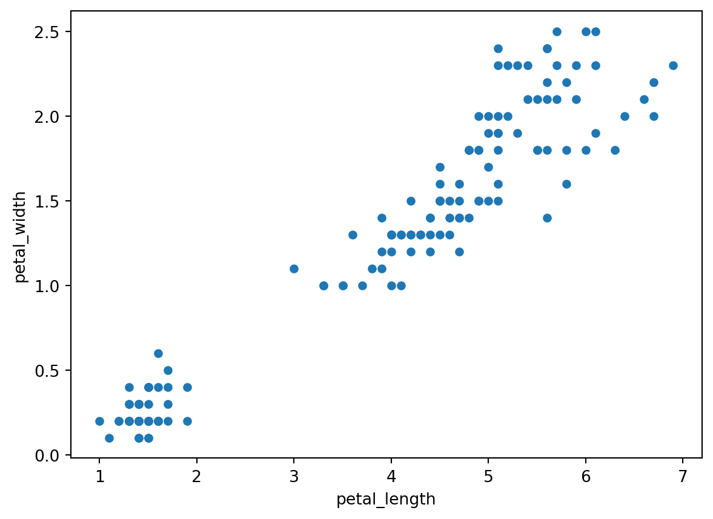
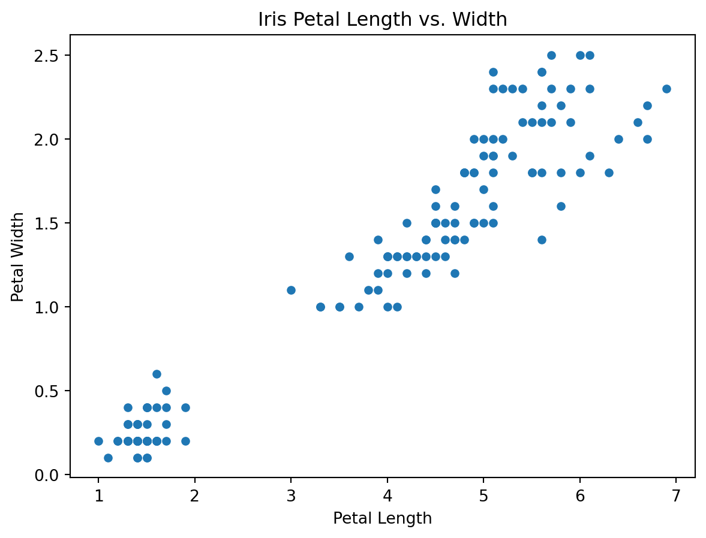
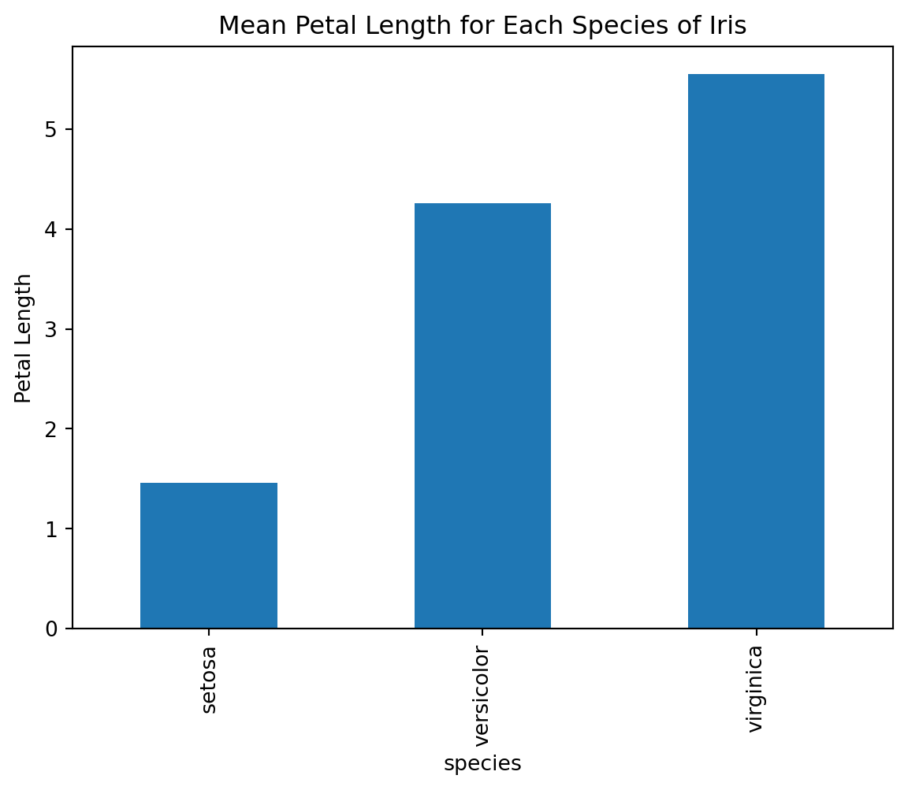
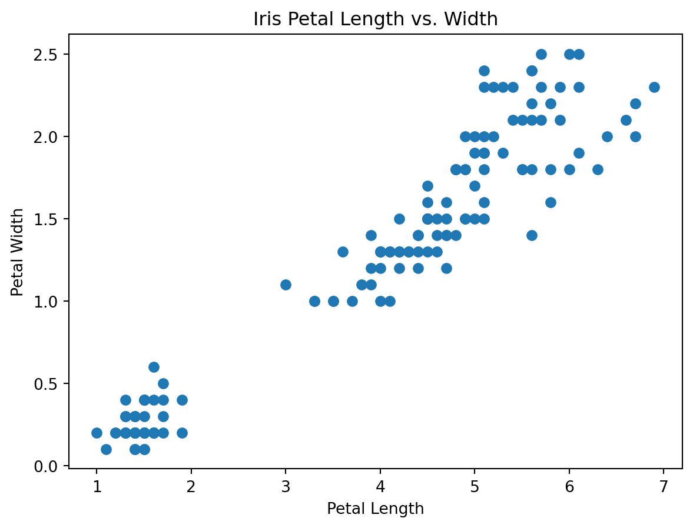
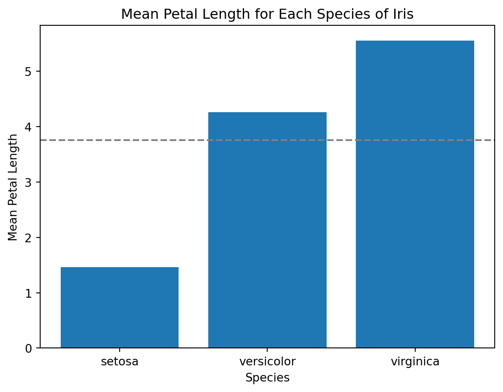
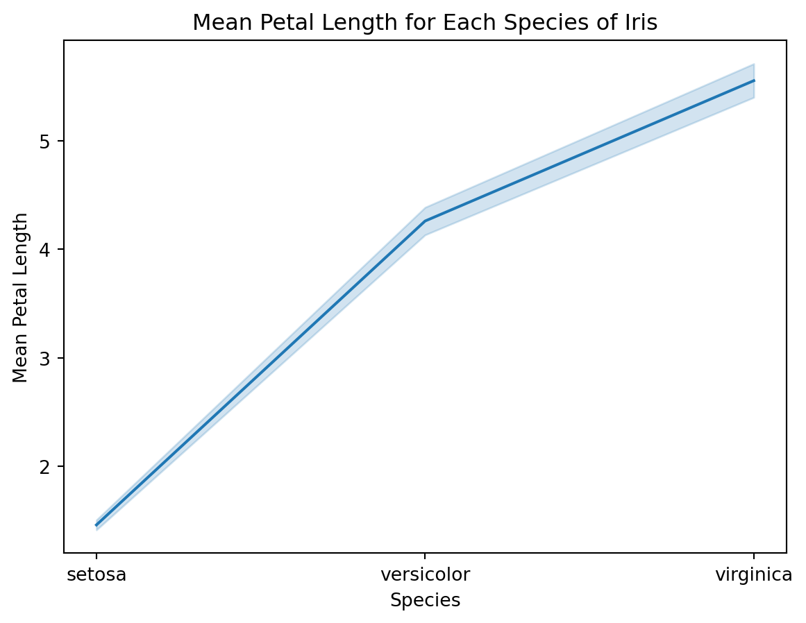

import pandas as pd
import matplotlib.pyplot as plt
# Load the iris dataset
iris = pd.read_csv('https://raw.githubusercontent.com/mwaskom/seaborn-data/master/iris.csv')Data visualization is a crucial aspect of data analysis as it helps in understanding data better. Python provides several libraries for data visualization, and in this article, we will explore three of the most commonly used libraries for data visualization in Python: pandas, matplotlib, and seaborn.
Pandas is a powerful library for data manipulation and analysis. It provides data structures for efficiently storing and manipulating large datasets. One of the primary data structures provided by pandas is the DataFrame, which is a two-dimensional table-like structure with labeled axes. The pandas library also provides a number of methods for data manipulation and cleaning, such as data cleaning, data merging, and data transformation.
Matplotlib is a plotting library for Python that provides a range of 2D plotting capabilities. It provides a high level of customization, making it possible to create complex visualizations with ease. Matplotlib also provides support for a wide range of output formats, including PDF, PNG, and SVG.
Seaborn is a Python data visualization library based on matplotlib. It provides a high-level interface for creating attractive and informative statistical graphics. Seaborn makes it easy to create complex visualizations by providing a range of built-in styles and color palettes.
Let’s start by exploring the pandas library.
Data visualization with pandas
Pandas provides a number of methods for data visualization. One of the most commonly used methods is the plot method, which can be used to create a wide range of visualizations, including line plots, scatter plots, bar plots, and histograms.
To demonstrate the use of pandas for data visualization, let’s start by loading a sample dataset. We will use the famous Iris dataset, which contains information about the lengths and widths of petals and sepals for three different species of Iris flowers. I first came across this dataset when I first started learning R’s tidyverse.
We can use the plot method to create a scatter plot of the petal length and width for the Iris dataset:
iris.plot(kind='scatter', x='petal_length', y='petal_width')
plt.show()
As can be seen from the above, pandas makes it easy to create a scatter plot with just a single line of code. We can also customize the plot by adding labels and a title:
iris.plot(kind='scatter', x='petal_length', y='petal_width')
plt.xlabel('Petal Length')
plt.ylabel('Petal Width')
plt.title('Iris Petal Length vs. Width')
plt.show()
In addition to scatter plots, pandas can also be used to create line plots, bar plots, and histograms. Let’s create a bar plot of the mean petal length for each of the three species of Iris:
iris.groupby('species')['petal_length'].mean().plot(kind='bar')
plt.ylabel('Petal Length')
plt.title('Mean Petal Length for Each Species of Iris')
plt.show()
Data visualization with matplotlib
While pandas provides a number of convenient methods for data visualization, matplotlib provides a more low-level interface for creating visualizations. This makes it possible to create highly customized visualizations, but it requires a bit more effort. Let’s see how we can use matplotlib to create a scatter plot of the petal length and width for the Iris dataset.
import matplotlib.pyplot as plt
# Create a scatter plot of petal length vs. petal width
plt.scatter(iris['petal_length'], iris['petal_width'])
# Add labels and a title
plt.xlabel('Petal Length')
plt.ylabel('Petal Width')
plt.title('Iris Petal Length vs. Width')
# Show the plot
plt.show()
From the above, it can be seen that creating a scatter plot with matplotlib requires a bit more code than with pandas, but it provides a high level of customization. We can also create a line plot of the mean petal length for each of the three species of Iris:
import numpy as np
# Get the mean petal length for each species
setosa_mean = iris[iris['species'] == 'setosa']['petal_length'].mean()
versicolor_mean = iris[iris['species'] == 'versicolor']['petal_length'].mean()
virginica_mean = iris[iris['species'] == 'virginica']['petal_length'].mean()
# Create a bar chart of the mean petal length
plt.bar(['setosa', 'versicolor', 'virginica'], [setosa_mean, versicolor_mean, virginica_mean])
# Add a horizontal line at the overall mean petal length
plt.axhline(y=iris['petal_length'].mean(), color='gray', linestyle='--')
# Add labels and a title
plt.xlabel('Species')
plt.ylabel('Mean Petal Length')
plt.title('Mean Petal Length for Each Species of Iris')
# Show the plot
plt.show()
From the above plot, matplotlib provides a lot of flexibility for creating customized visualizations.
Data visualization with seaborn
Seaborn is a Python data visualization library based on matplotlib. It provides a high-level interface for creating attractive and informative statistical graphics. Seaborn makes it easy to create complex visualizations by providing a range of built-in styles and color palettes.
To create a scatter plot of the petal length and width for the Iris dataset with seaborn, we can use the scatterplot function:
import seaborn as sns
# Create a scatter plot of petal length vs. petal width
sns.scatterplot(data=iris, x='petal_length', y='petal_width')
# Add labels and a title
plt.xlabel('Petal Length')
plt.ylabel('Petal Width')
plt.title('Iris Petal Length vs. Width')
# Show the plot
plt.show()From the above plot, seaborn provides a clean and attractive visualization with just a single line of code.
We can also create a line plot of the mean petal length for each of the three species of Iris with the lineplot function:
# Create a line plot of the mean petal length for each species
sns.lineplot(data=iris, x='species', y='petal_length', estimator=np.mean)
# Add labels and a title
plt.xlabel('Species')
plt.ylabel('Mean Petal Length')
plt.title('Mean Petal Length for Each Species of Iris')
# Show the plot
plt.show()
From the above plot, provides a more polished and informative visualization than matplotlib with very little code.
Seaborn also provides many other types of visualizations, including heatmaps, histograms, and violin plots, that can be used to explore relationships in your data.
Conclusion
In this article, we have seen how to use Python libraries such as pandas, matplotlib, and seaborn for data visualization. Data visualization is an essential part of the data analysis process because it allows us to explore and understand our data more effectively.
Pandas provides a convenient interface for creating basic visualizations such as scatter plots and bar charts. Matplotlib provides a high level of customization and control over the appearance of your visualizations, but requires more code to create them. Seaborn provides a high-level interface for creating attractive and informative statistical graphics with minimal code.
As with any tool, it is important to choose the right visualization library for your specific needs. If you need to create simple visualizations quickly and easily, pandas may be the best choice. If you need a high level of control over the appearance of your visualizations, matplotlib may be the better option. If you want to create complex statistical graphics quickly and easily, seaborn may be the way to go. Seaborn is my current favourite. In any case, with the power of Python and these visualization libraries, you can create informative and attractive visualizations that help you better understand your data.